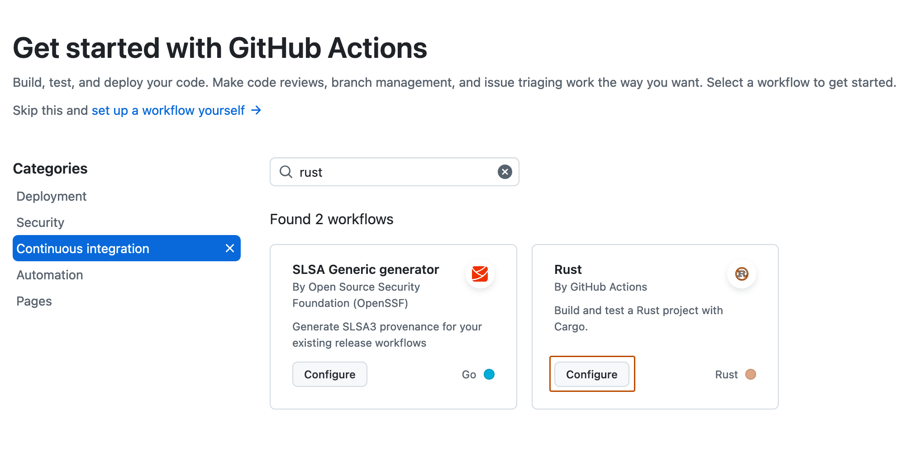

Learn how to create a continuous integration (CI) workflow to build and test your Rust project.
Introduction
This guide shows you how to build, test, and publish a Rust package.
GitHub-hosted runners have a tools cache with preinstalled software, which includes the dependencies for Rust. For a full list of up-to-date software and the preinstalled versions of Rust, see GitHub-hosted runners.
Prerequisites
You should already be familiar with YAML syntax and how it's used with GitHub Actions. For more information, see Workflow syntax for GitHub Actions.
We recommend that you have a basic understanding of the Rust language. For more information, see Getting started with Rust.
Using a Rust workflow template
To get started quickly, add a workflow template to the .github/workflows directory of your repository.
GitHub provides a Rust workflow template that should work for most basic Rust projects. The subsequent sections of this guide give examples of how you can customize this workflow template.
On GitHub, navigate to the main page of the repository.
Under your repository name, click Actions.
If you already have a workflow in your repository, click New workflow.
The "Choose a workflow" page shows a selection of recommended workflow templates. Search for "Rust".
Filter the selection of workflows by clicking Continuous integration.
On the "Rust - by GitHub Actions" workflow, click Configure.

Edit the workflow as required. For example, change the version of Rust.
Click Commit changes.
The rust.yml workflow file is added to the .github/workflows directory of your repository.
Specifying a Rust version
GitHub-hosted runners include a recent version of the Rust toolchain. You can use rustup to report on the version installed on a runner, override the version, and to install different toolchains. For more information, see The rustup book.
This example shows steps you could use to setup your runner environment to use the nightly build of rust and to report the version.
- name: Temporarily modify the rust toolchain version
run: rustup override set nightly
- name: Output rust version for educational purposes
run: rustup --version
Caching dependencies
You can cache and restore dependencies using the Cache action. This example assumes that your repository contains a Cargo.lock file.
If you have custom requirements or need finer controls for caching, you should explore other configuration options for the cache action. For more information, see Dependency caching reference.
Building and testing your code
You can use the same commands that you use locally to build and test your code. This example workflow demonstrates how to use cargo build and cargo test in a job:
jobs:
build:
runs-on: ubuntu-latest
strategy:
matrix:
BUILD_TARGET: [release] # refers to a cargo profile
outputs:
release_built: ${{ steps.set-output.outputs.release_built }}
steps:
- uses: actions/checkout@v5
- name: Build binaries in "${{ matrix.BUILD_TARGET }}" mode
run: cargo build --profile ${{ matrix.BUILD_TARGET }}
- name: Run tests in "${{ matrix.BUILD_TARGET }}" mode
run: cargo test --profile ${{ matrix.BUILD_TARGET }}
The release keyword used in this example corresponds to a cargo profile. You can use any profile you have defined in your Cargo.toml file.
Publishing your package or library to crates.io
Once you have setup your workflow to build and test your code, you can use a secret to login to crates.io and publish your package.
- name: Login into crates.io
run: cargo login ${{ secrets.CRATES_IO }}
- name: Build binaries in "release" mode
run: cargo build -r
- name: "Package for crates.io"
run: cargo package # publishes a package as a tarball
- name: "Publish to crates.io"
run: cargo publish # publishes your crate as a library that can be added as a dependency
If there are any errors building and packaging the crate, check the metadata in your manifest, Cargo.toml file, see The Manifest Format. You should also check your Cargo.lock file, see Cargo.toml vs Cargo.lock.
Packaging workflow data as artifacts
After a workflow completes, you can upload the resulting artifacts for analysis or to use in another workflow. You could add these example steps to the workflow to upload an application for use by another workflow.
To use the uploaded artifact in a different job, ensure your workflows have the right permissions for the repository, see Use GITHUB_TOKEN for authentication in workflows. You could use these example steps to download the app created in the previous workflow and publish it on GitHub.